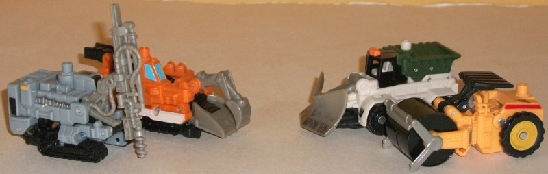
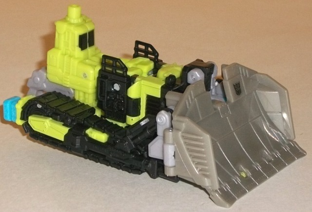
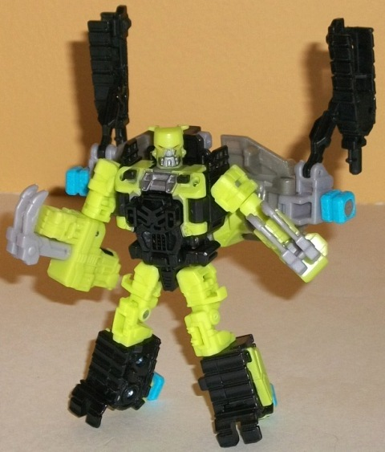
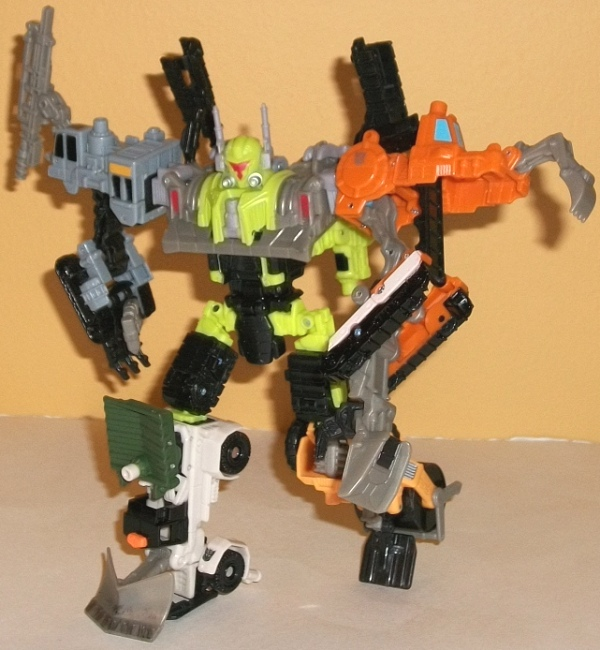

Steamhammer
w/ Constructicons
Steamhammer
w/ Constructicons
Constructicons

Allegiances
: Decepticons
Difficulty of Transformations
: Automatic
Color Schemes
: Light orange, light
milky brownish gray, black, moderately light gray, "cheese" yellow, off-white,
dark forest green, and some light sky blue, chalky white, silver, bright
safety orange, and dull chalky yellow
Individual Rating
: 8.5
The first Constructicon
drone up is the gray driller vehicle. Now, color-wise I have to admit this
drone doesn't do it for me. It's almost entirely two different shades of
gray and black. The gray that makes up most of the driller-piece is also
a rather blah shade which combines a light shade of brown with the gray,
and just doesn't look that appealling (and which is unfortunately shared
with all the other limbs and Steamhammer). However, the mold detailing
on this guy is GREAT, with vents, wires, and the like molded in everywhere.
His paint detailing is also fairly nice, with most of the necessary details--
such as the windows, treads, and a few wires and "safety" deco jobs-- all
painted onto the vehicle. I do wish the tip of the drill had some silver
or brown paint on it, but that's a minor quibble. The driller piece could
also stand to be bigger proportionally, but given how that would detract
from the drone's other mode, his proportions are decent enough as is. As
for arm mode, the treads essentially extend downward from the main body
of the vehicle, with most of the vehicle serving as the shoulder. Although
the arm has the "skinny" look of-- well, pretty much every Power Core arm
drone-- the claws at the end look quite good, and he even has a thumb joint!
Nice.
The other Construction
arm drone is a mostly orange conveyor belt vehicle. The shovel-arm on the
front is a bit embarrassingly small, but otherwise the proportions are
pretty hunky-dory for this guy. The bright orange plastic helps to make
this drone stand out a bit (certainly moreso than the previous one), though
the black and gray help mute it a little. It's admittedly loud, but realistic
in its coloration. Like the previous drone, this one has a ton of impressive
mold detailing everywhere, from the bits on the conveyor belt to vents
and rivets. The paint detailing is mostly confined to the treads, but the
sky blue on the cockpit looks quite nice against the orange, and at least
one of his vents is painted silver (though I certainly wish more were).
In arm mode, this one transforms similarly to the other Constructicon arm
drone, with the shovel and tread pieces coming down to form the hand and
arms while the bulk of the vehicle forms the shoulder. And, just like the
other Constructicon arm drone, this one looks quite good for a PCC arm,
and is another one with a thumb joint.
Next up is a mostly
off-white, black, and dark green front end loader. Of all the Constructicon
limbs, this one's proportions are probably the most modified for the gimmick,
with the entire thing looking a bit too squat, particularly at the top
and front. The color scheme is, like the driller vehicle's, a bit droll
but realistic. The dark green and bright orange "flashing light" on top
of the cockpit help to make him a bit less monochrome, but generally this
one's not a drone that immediately draws your eye. The paint apps are concentrated
on the top, though the black paint wash on the front of the shovel to simulate
dirt is a nice touch. The mold detailing is, again, quite impressive, with
hinges and bolts everywhere, and even little drivers' seats molded inside
the cockpit. You plug the combiner port into the rear end of this vehicle,
which causes the shovel to form the foot while the green part forms the
"kneecap" and a section of the bottom of the main body folds back to become
the heel. It's a fairly solid-looking leg, and quite stable-- however,
it's worth noting that when reverting this one back to its vehicle mode,
you have to manually push the shovel back into its default position-- it
won't automatically transform back like on most PCC limbs.
Last but not least is
the steamroller drone (I love how most of these vehicle modes have been
unused so far among construction vehicle Transformers). The proportions
are generally pretty good on this one, though the "roof" above the drivers'
seat sits at a slight angle to the rest of the vehicle due to the transformation
gimmick. The mold detailing isn't quite as good as the other drones', but
those are pretty high bars-- it's still decent enough on this drone, with
panels and vents in most of the appropriate places. The "cheese yellow"
and black color scheme is basic, but works fairly well, both in terms of
being realistic while each color contrasts nicely with the other. The paint
apps are also basic, but get the job done-- the red line across the back
third complements the orangish-yellow nicely, and there's a bit of silver
on his vents, as well as some nice "wear" silver streaks along the roller
bit itself. The dull yellow paint used for the rear wheels doesn't quite
match the plastic color, though, which makes it stick out a little unnecessarily.
In leg mode, this "roof" bit over the drivers' seat folds down to become
the foot, the roller serves as the heel, and the rear third or so angles
itself forward, revealing another piece of hidden robotic detailing behind
it and forming the knee in the process. I'm not a fan of the angled look
the knee has, but otherwise it makes a pretty decent, stable foot.
The Constructicon limbs
are the best drone team of the entire Power Core Combiner line, hands down
(pun intended). They may not have the most interesting color schemes, but
they're realistic, and they all have great detailing, good proportions
(for the most part-- some exceptions to the front end loader notwithstanding),
and nice limb modes with solid connections (and, for the arms, thumbs!).
No other drone team comes close.
Steamhammer



Allegiance
: Decepticon
Difficulty of Vehicle/Robot Transformation
:
Easy
Difficulty of Torso Transformation
:
Easy
Color Scheme
: Light lime green,
black, light milky brownish gray, and some light sky blue, silver, and
red
Individual Rating
: 8.4
Steamhammer's vehicle
mode is a bulldozer. For the most part, this vehicle mode is done up pretty
nice for a Power Core Combiner, with all the extras pretty much hidden
from view. The top of the normal robot head is just barely visible behind
the shovel, and two of the combiner pegs stick out the back ends of the
treads, but that's it. (The other two combiner ports are mostly or completely
hidden from view from most angles, stuck snugly behind the shovel as they
are.) The proportions are slighty skewed-- the cockpit area is a bit small
and the shovel a bit overly large-- but they're not immensely so, and still
work overall with the toy. The color scheme is basically G1 Constructicon
without the purple-- there's that light lime green, but black and brownish
gray serve as the other main/secondary colors instead. It's more fitting
for a construction vehicle, to be sure, but to me the black and brownish
gray just don't play off the lime green like the deep purple did for the
G1 Constructicons. There also isn't a whole lot of paint apps on Steamhammer
visible from this mode-- the cockpit window is painted black and there's
a little light green paint on the treads, but that's mostly it, and neither
of those are "new" colors to liven up the mode a bit. There is some nice
silver "worn metal" paint apps on the bottom of the shovel, though, which
is a nice touch. Steamhammer has tons of mold detailing, though, just like
his drones-- particularly on the treads, but there's also some nice little
ladders, vents, and the like molded into parts of his vehicle mode. Also,
in case you're wondering, the shovel can move a little in this mode-- you
can rotate it up from its default "straight forward" position, though if
you rotate it up too much you'll begin to see the torso mode chest &
head under it.
Steamhammer's robot
mode is really short and stocky, but that certainly gives it personality.
The face-- with the red, narrowed eyes and large silver chin-- scream "angry
little worker". His general proportions-- taking this into account-- are
pretty good, with little stubby legs made mostly out of his treads (with
two of the combiner ports used as heels-- always a good use of them in
this mode) while the arms are made out of halves of the vehicle cockpit.
This leaves him with extra little bits of vehicle mode hanging off his
elbows, but it's not that big of a deal-- particularly when you consider
the really nice claw-weapons that fold out in front of his hands in this
mode. His chest design is also pretty nice, with part of the torso mode's
"skirt" actually folding up and pegging into place in the middle of the
chest to create a fairly nice combination. That said, there's some pretty
huge
kibble hanging off Steamhammer's back, made up mostly of his shovel and
the halves of his treads. The huge backpack makes up more than a third
of his overall mass, though thankfully with correct positioning of his
heels, he can still stand up even with all that back-heavyness. Steamhammer
has pretty good articulation in this mode-- he can move at the neck, shoulders
(at two points), elbows, hips, knees (at three points), and slightly at
the ankles/heels. This theoretically gives him pretty good posability,
but again you have to remember that that huge weight on his back can render
some poses impossible without additional support, particularly given that
some of his major joints are ball joints and can't hold up all that weight
by themselves.
In his torso mode, Steamhammer
is simply aces, and this appears likely to be where the focus of the design
work went into. Like with most Power Core Combiners, Steamhammer's "normal"
robot legs fold up and angle themselves sideways to become the combiner's
upper legs, but since Steamhammer's normal legs were already stubby, here
they work perfectly as upper legs, without any particularly obvious "second
knee" joints. The aforementioned "skirt" piece helps make that bit less
obvious too. The chest is formed from the back section of the shovel, giving
Steamhammer a broad (but not TOO broad) shouldered stance in this mode.
There's a flip-out Powerlinx port on the chest in case you want to armor
him up with a Minicon. The head sculpt is great-looking., with a really
cool-looking "drone-like" face made out of one big three-pronged visor
and antennae that look like smokestacks. Pretty much everything pegs in
well in this mode and is solid, something which this line sorely needed
more of. Even the "normal" robot arms-- largely ignored in this mode's
design-- fold well behind the back, with grooves for the claw-weapons to
slide into and hold them in place. The only real "kibble" in this mode
are the halves of the tread pieces above Steamhammer's shoulders, though
because they're considerably smaller proportionally than all the kibble
on Steamhammer's back in his regular robot mode, they aren't nearly as
big of a deal here. As far as movement in this mode, Steamhammer can move
slightly at the neck, at the base of each antennae, the shoulders (at two
points), the hips (at two points), and the knees (at two points).
Steamhammer's robot
mode-- while certainly original-looking-- has some huge kibble on the back
that detract quite a bit from it, but in vehicle mode he looks quite good,
and his torso mode is one of the best-- if not THE best-- out of any Power
Core Combiner's, with everything locking into place perfectly and looking
great. Although I don't think he's quite the best "core" figure from the
line, combined with his best-of-the-line drone limbs, I'd say if you only
purchase one Power Core Combiner pack that takes full advantage of the
line's gimmick, make it this one. Definitely recommended!
Steamhammer w/ Constructicons Bio
:
Steamhammer knows there's another Decepticon
team out there with the same name as his. He doesn't care. The strength
granted him through the Power Core process is more than enough to destroy
anyone who dares to challenge him.
Strength: 10.0
Intelligence: 4.0
Speed: 4.0
Endurance: 10.0
Rank: 7.0
Courage: 8.0
Fireblast: 5.0
Skill: 7.0
Reviews by Beastbot
Back to Power
Core Combiners Index